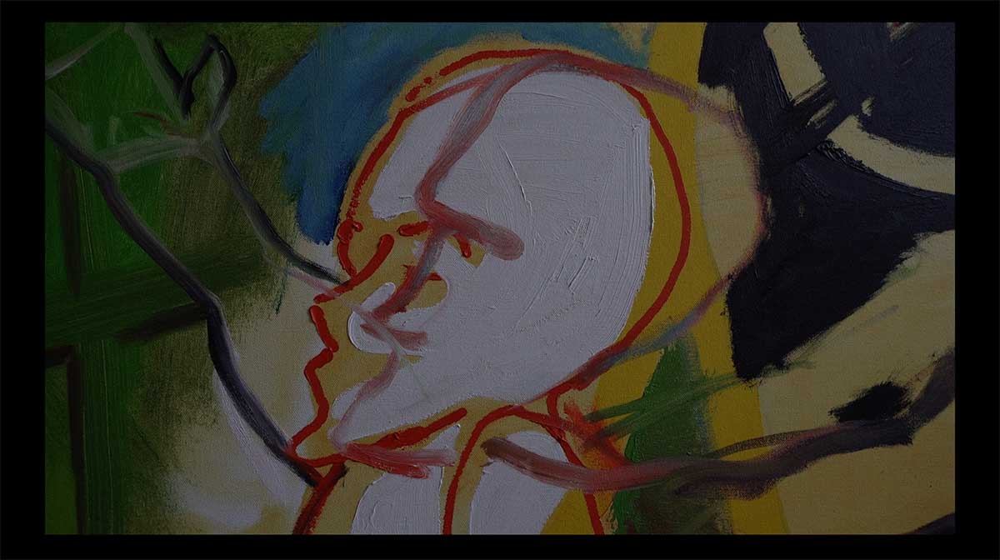
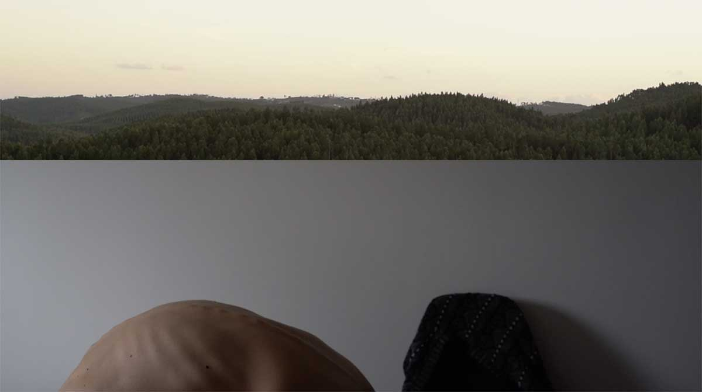
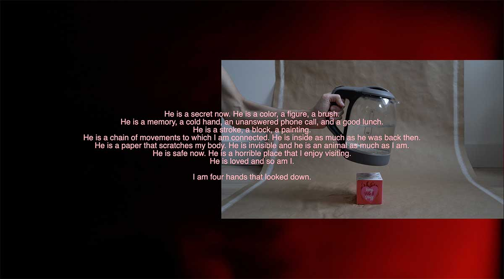
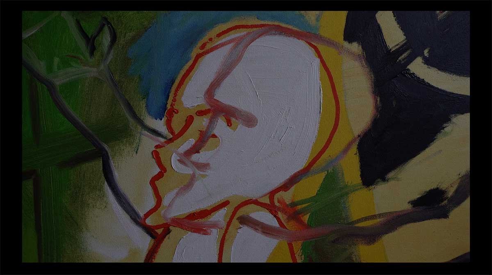
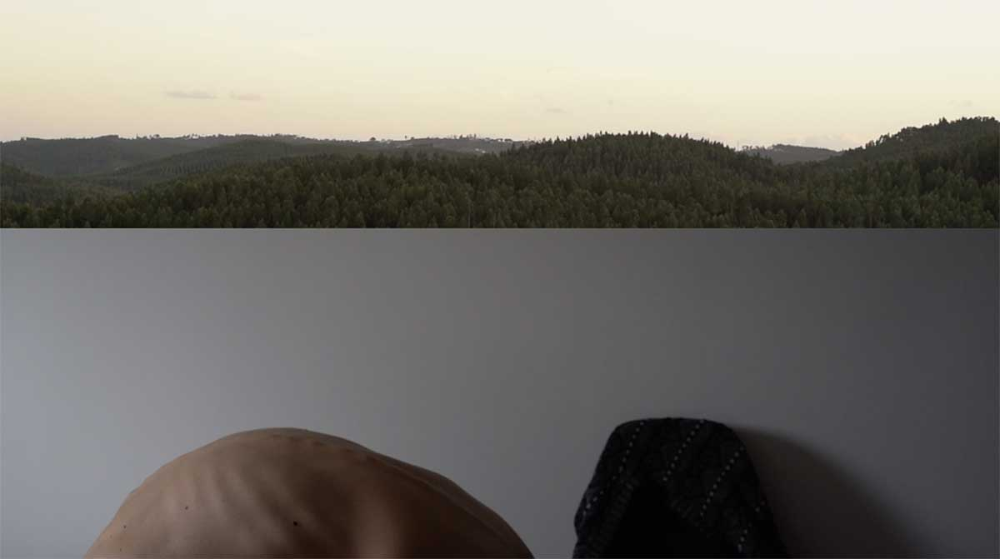
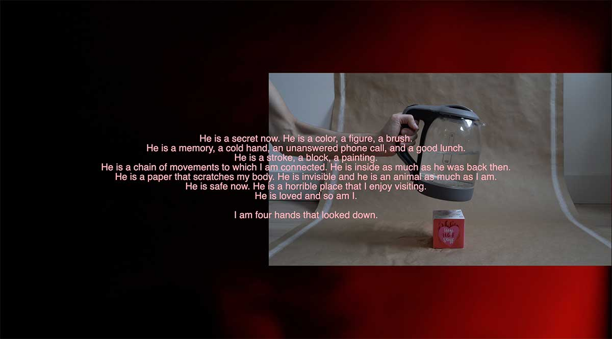

Could a sound persist under sands unseen
link to performance videosingle-channel video, 3’53’’
This installation consists of a looping video and the phone's body adorned with a surrounding display of flowers as a tomb-like tribute to the memory of a Nokia Lumia 520. At its core, the project takes the form of a performative funeral, imbuing the concept of a funeral with a touch of romanticization through the expression of value and care for the departed. In this particular case, the Nokia Lumia 520 symbolizes an object that embodies the opposite of uniqueness and individuality. The installation invites us to mourn an item that is replaceable, mass-produced, and consequently, easily replicated.
Central to the installation is the distinction between the physical body of the Nokia Lumia 520 and the memories associated with it. With a dark yet ironic approach, the viewer is invited to reflect on the confluence of this object, its meaning as a non-human agent and its capacity to reproduce human-like memories which are projected directly above. This juxtaposition prompts contemplation on the transience of material possessions and the enduring nature of memories.
Through this installation, viewers are encouraged to reflect on the significance we attach to objects, particularly those that are mass-produced. It prompts us to reevaluate our relationship with consumer culture and the emotional connections we form with inanimate items. Ultimately, the project invites us to honor and mourn the passing of an object while raising thought-provoking questions about what exactly distinguishes human from material as well as how do we value material possessions.

 




